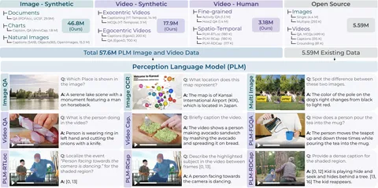
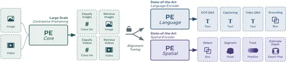
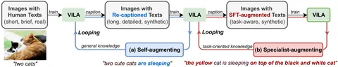
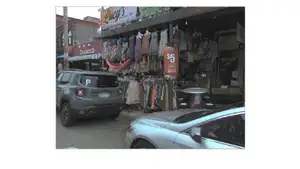
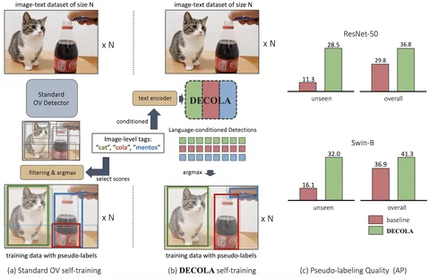
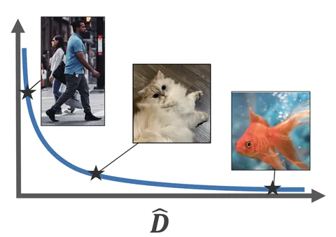
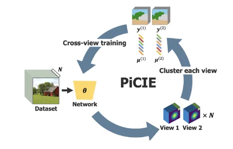

The Llama 4 Herd: Architecture, Training, Evaluation, and Deployment Notes
Technical report, 2026
Multimodal research at Meta Superintelligence Labs (MSL)
I currently work on multimodal pretraining.
I received my Ph.D. in Computer Science from UT Austin, advised by Prof. Philipp Krähenbühl. Before that, I received my B.S. from Cornell University, where I worked with Prof. Bharath Hariharan and Prof. Kavita Bala. I have previously worked at Meta FAIR and NVIDIA.
2026
Technical report, 2026
2025




2024

2023

2022


2021

2019